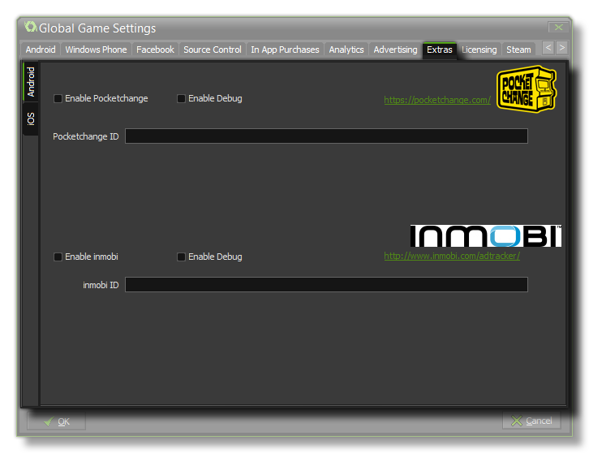

The PocketChange Tab
This section deals with the PocketChange tab of the Global Games Settings Window.

PocketChange is a system that rewards virtual currency for plays of your game. Once you have activated this system on this tab, when the player starts your app GameMaker:Studio will make
two calls to the PocketChange network. The first is to display your daily reward (if any) which will also launch their api, then there is another call which displays a button on the screen which, if the user touches it,
will display the PocketChange shop. The normal currency exchange is 10 "tokens" per day, but this can be negotiated with the people at PocketChange so your users can earn for gaining achievements, high scores etc...
You can also test your PocketChange account by flagging the "Use Test" check-box, in which case the standard Daily Reward will be awarded each run of the game until this flag is
un-checked again.
For more information you can go to PocketChange.com.
NOTE: This functionality is limited to the Professional Version of GameMaker:Studio and only then is it available for the
Android module.